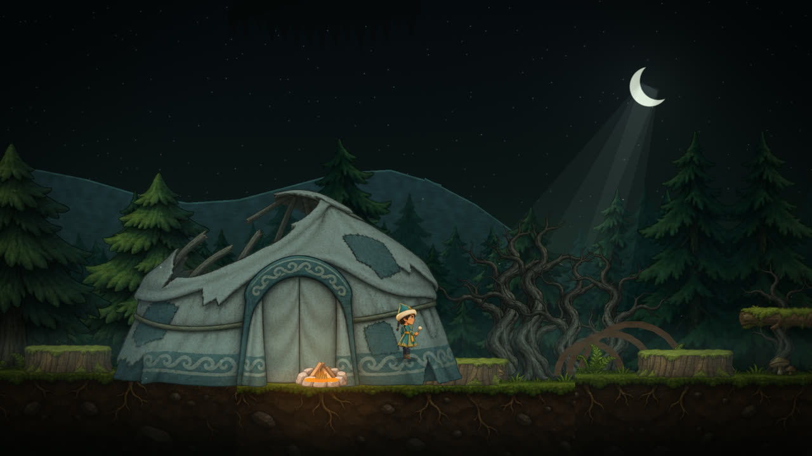
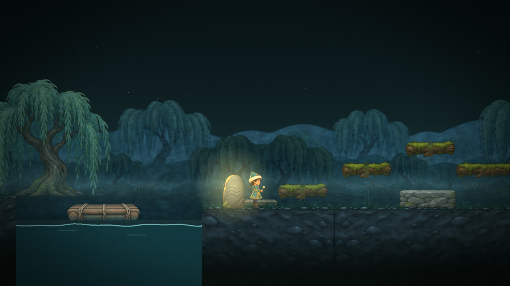

The story
In a night raid, Ay Su's kut, the life-force that keeps a person alive, is torn away and carried below. Tolun sets out from the camp fire, climbs down a crack in the earth and works his way floor by floor toward the bottom. Dede Korkut tells the story as you go.
How it plays
Tolun fights with a drum and a mallet: he strikes, dashes, swings from roots, rides rafts across the river and hops from rock to rock down to the next floor. Each floor gives him a new ability, and the boss at its end tests it. Felt, water-channel and echo-stone puzzles turn up along the road. The game was built for a touch screen, and every fight works with two thumbs.
The floors of the underworld



Questions
- What is KAM?
- KAM is a side-scrolling 2D action RPG drawn from Turkic mythology, developed independently in Türkiye.
- What is a kam?
- In the traditions of the Turkic peoples, a kam mediates between people and the spirit world; in Western languages the role is usually called a shaman. The game's hero, Tolun, is a young kam.
- What is kut?
- In Turkic belief, kut is the life-force that keeps a person alive and standing. In the game, Ay Su's kut is stolen and Tolun sets out to bring it back.
- Where do the creatures come from?
- Albastı, Deli Dumrul and Tepegöz come from Turkic folk tales. Others come from Altai, Sakha, Tuva and Khakas stories, and a few are the game's own inventions. The in-game journal says which is which.
- Which platforms?
- iOS (iPhone) first, then Android. The game is in English and Turkish.
- Is it paid?
- The first floor is free, with no ads. The rest of the part opens with one payment. There are no subscriptions or loot boxes, and power and in-game currency are never for sale.
A note on the stories
The game borrows from Altai, Sakha, Tuva, Khakas and Oghuz storytelling, traditions people still live by today. Its rules were made for the game and don't describe a real belief or ritual. If you spot something wrong or missing, write to us.